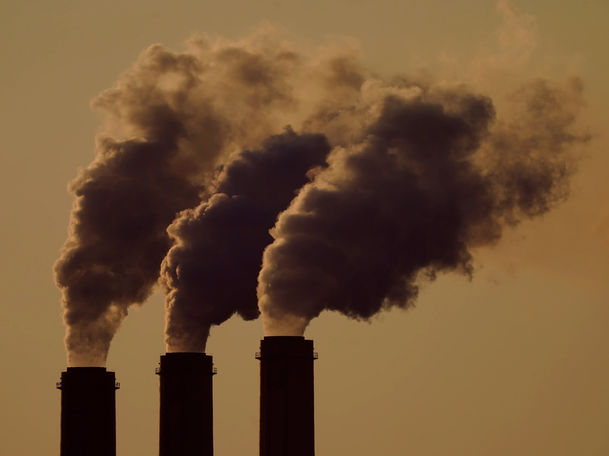
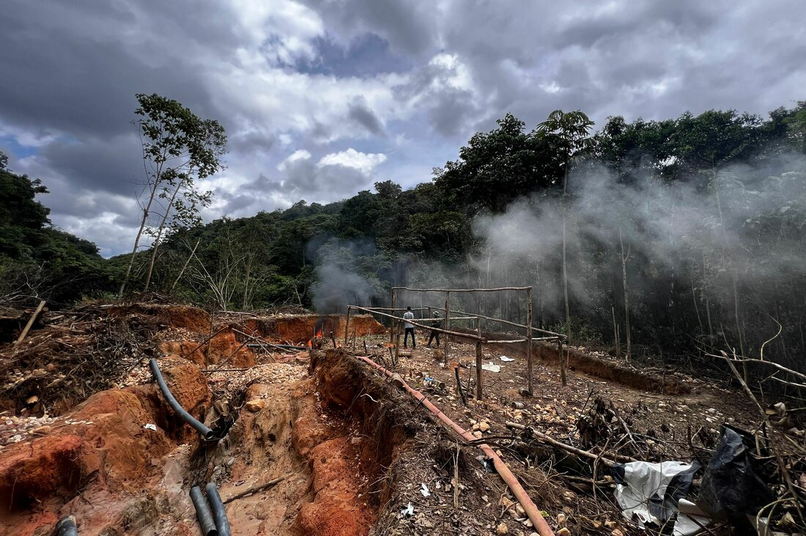
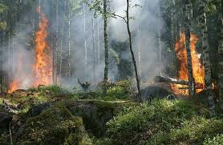

What you should know
Fossil fuels and land-use
Climate change is one of the most pressing challenges of our time, driven largely by CO₂ emissions from human activities.
These emissions primarily stem from the burning of fossil fuels and land-use changes, such as deforestation and agriculture.
This website explores global emission patterns, using visualizations to highlight the contributions of different continents and their most significant polluting countries.

Hover here In 2022, more than 70% of all global greenhouse gas emissions came from fossil fuels.
Hover here Tropical deforestation alone is responsible for emitting 1.5 billion tons of CO₂ annually, equivalent to the emissions of 400 million cars
Hover here
Cumulative emissions from land use changes since 1850 are estimated to be around 190 GtCO₂, compared to over 1,000 GtCO₂ from fossil fuels

Hover here Between 2000 and 2020, the world lost nearly 100 million hectares of forest due to agricultural expansion, urbanization, and loggingData-preparation activities
Plots are based on CO₂ emissions from fossil fuels and land-use change (co2-fossil-plus-land-use.csv).
To prepare data we filtered out specific years and calculated top3 emitters per each continent.
Then we saved it to separate file with data for each year.
×
Explanation
Fossil emission and land use distribution across the world
×
Comment
This alluvial plot visualizes the division of continents into the top 3 most polluting countries based on CO₂ emissions from fossil fuels and land-use change.
We can clearly see how TOP3 emitting countries emissions distribute over each continent - emissions across the world mostly comes from fossil use with leading continent - Asia.
Additionally fossil emissions coming from each continent are greater than land emissions - despite South America where country such as Brasil produces land emissions rather than fossil emissions!
This dependency can be seen also in previous years (2020-2000), in 2010 and 2005 Argentina and in 2010 Australia were also generating higher land than fossil emissions.
The width of the bands is proportional to the flow quantity, providing insights into the distribution of emissions across continents and countries.
×
Explanation
The chart is built using D3.js, a JavaScript library, to visualize data on alluvial plot
We divided data into 4 layers:
- continents
- countries
- fossil fuels and land-use
- world total of fossil fuels and land-use
This way we wanted to obtain clear visualization of the data and show the most polluting countries in the world as well as the contribution of each continent to the total emissions. The same data could be represented by only 3 layers - 4 layers are done for better visualization purpose!
Effect from Fossil fuels and land-use
Comment
The chart illustrates the CO₂ emissions from fossil fuels and land-use change.
Explanation
The chart was created based on prepared dataset continent_emissions_top5_{year}.csv. Data was extracted from the file co2-fossil-plus-land-use.csv.